Sesión 4
Programa de Formación Científica:
Análisis Estadístico 2022
Percy Soto-Becerra
Instituto de Evaluación de Tecnologías en Salud e Investigación - IETSI, EsSalud
@github/psotob91
Julio 1, 2022
Modelo de Regresión Lineal
Análisis de regresión
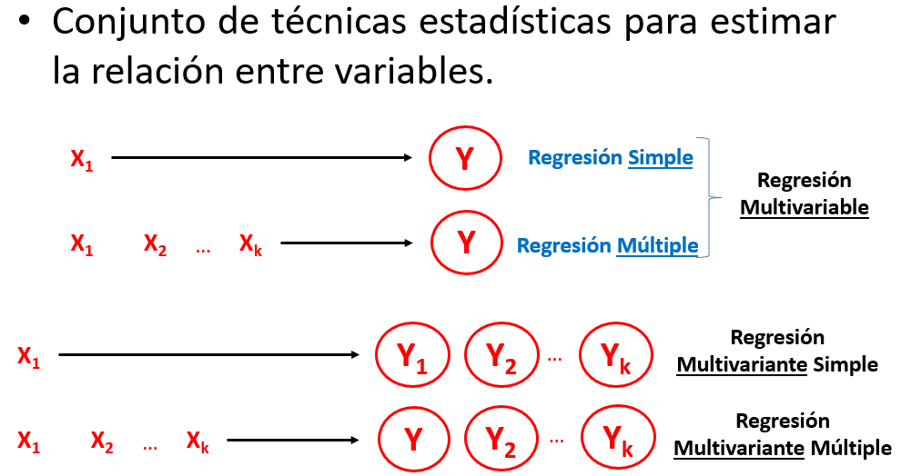Modelos de regresión multivariable
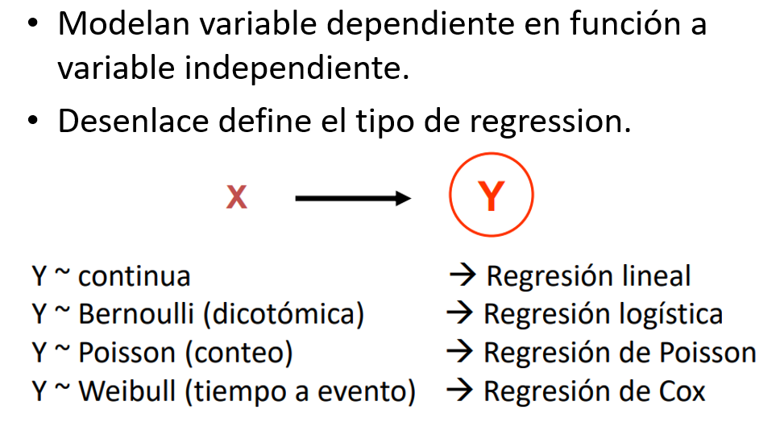¿Para qué usamos los modelos de regresión?
Según
STRATOSpodemos usar regresión para 3 propósitos diferentes:Descripción*
Predicción
Explicación
Propósitos del modelamiento
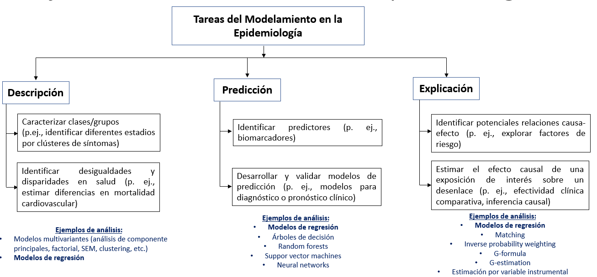
Propósitos del modelamiento (cont.)
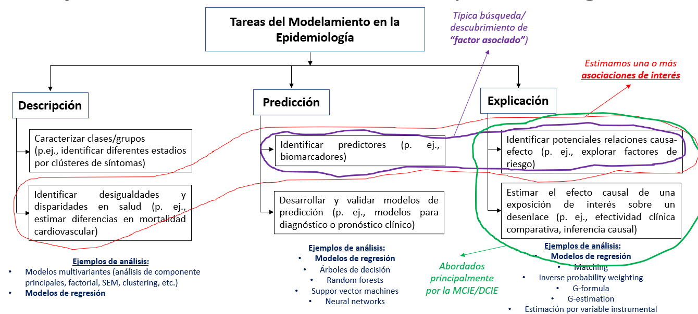
¿Para qué usamos los modelos de regresión? (cont.)
Este curso se centrará solamente en algunas aplicaciones.
Regresión para descripción:
- “Factores asociados..:” No necesariamente importa que los factores sean causales.
- Evaluación de la magnitud de desigualdades, magnitud de brechas, etc.
¿Para qué usamos los modelos de regresión? (cont.)
Regresión para explicación:
- “Efecto / Efectividad / Impacto”: Busca estimar efectos causales.
- Explorar potenciales factores causales… (puede clasificarse dentro de descripción)
Regresión para predicción:
- Factores pronóstico o predictores de…“: Identifican predictores de interés que luego alimenten mdelos predictivos.
- Modelos de predicción: Predicción para diagnóstico y pronóstico.
¿Para qué usamos los modelos de regresión? (cont.)
No abordaremos modelos de regresión para desarrollar modelos o reglas de predicción clínica.
Tampoco para métodos de inferencia causal robusta.
Regresión Lineal
- Método estadístico que modela la
relaciónentre unavariable continua (dependiente)y otrasvariables (independientes).
Relación entre dos variables
\(Y\) es
variable resultado(outcome), respuesta o dependiente.\(X\) es una
variable explicativa, predictora o regresora.En la figura, a mayor valor de \(X\), mayor valor de \(Y\).
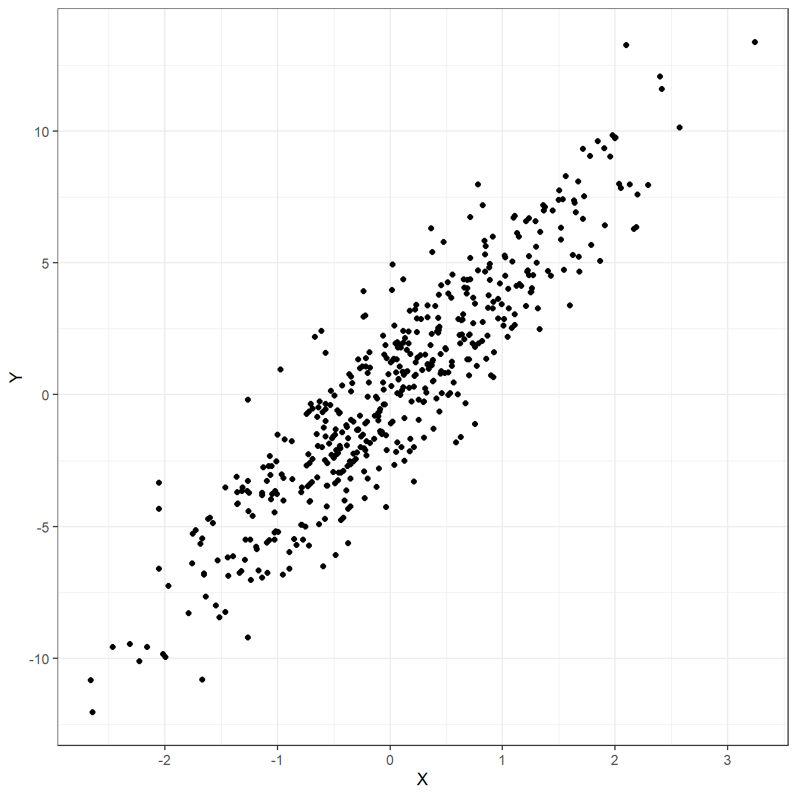
¿Cómo podemos resumir la relación entre ambas variables?
Podemos tratar de dibujar una
línea rectaqueresumala relación.Existen
infinitas rectas posiblesque podríamos trazar: ¿Cuál elegir?
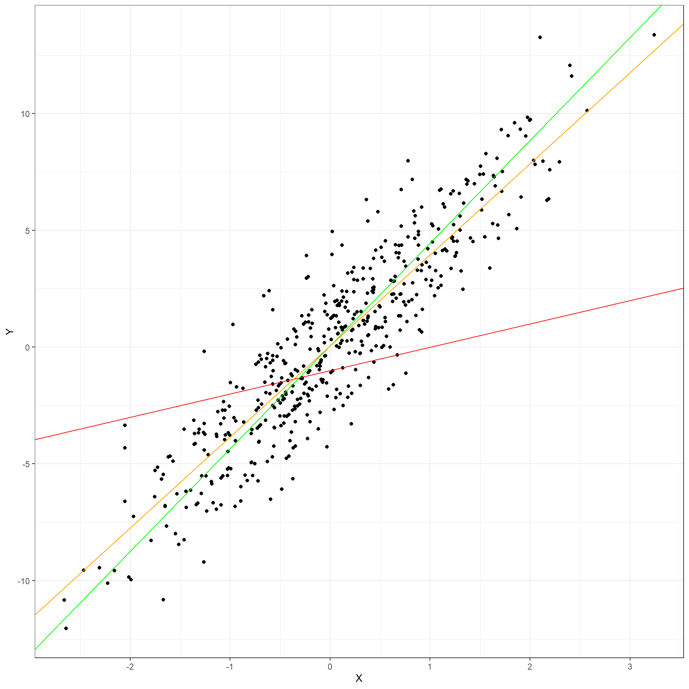
¿Cómo podemos resumir la relación entre ambas variables? (cont.)
- Una opción sería elegir una
rectaque pase por elvalor más representativodel \(y_i\) en cada valor fijo de \(x_1\).- Una
rectaqueconectelospromedios condicionadosen \(x_1\)
- Una
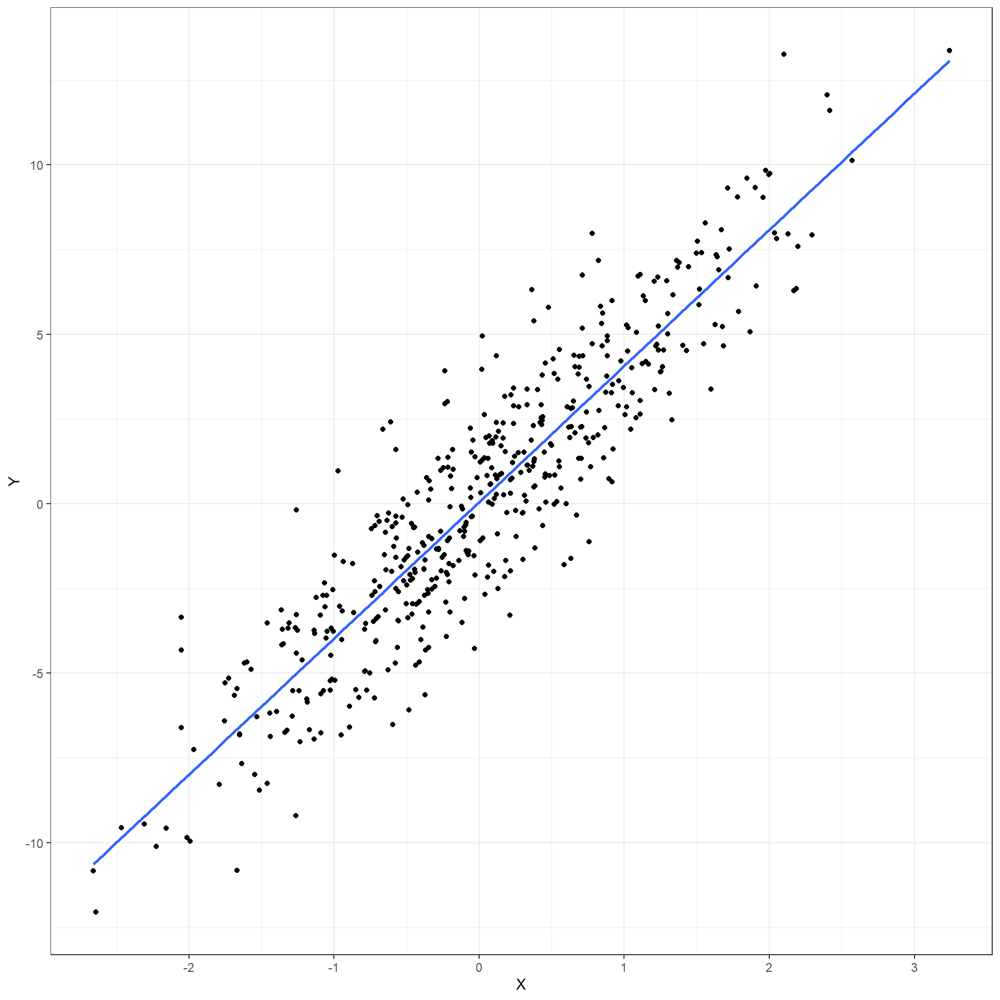
Anatomía de la RLS
- Entonces, la
recta que conecta los promediosde \(y_i\)condiciondosen \(x_{1i}\) se puede expresar mediante la siguientecombinación lineal:
\[\beta_0 + \beta_1x_{1i}\]
- Componente Sistemático: Formalmente hablando, para cada observación \(i\) en la población, podemos
relacionarelvalor esperado(promedio) \(E[y_i]\) de \(y_i\) (también llamado \(\mu_i\)) con lavariable explicativa\(x_{1i}\) mediante la siguienteecuación lineal:
\[E[Y | X_1 = x_{1i}] = E[y_i] = \mu_i = \beta_0 + \beta_1x_{1i}\]
- Donde:
- \(y_i\) son
variables aleatoriasindependientes e idénticamente distribuidas (i.i.d) - \(x_1\) es una variable cuyas valores son fijos y conocidos: \(x_1i\):
- Se asume se
miden sin error. No importasudistribución.
- Se asume se
- \(\beta_0\) y \(\beta_1\) son
parámetros desconocidosde una superpoblación infinita.- Llamados
coeficientes de regresióny son unamedida de asociación. - Es lo que
queremos estimarcon los datos de la muestra!
- Llamados
- \(y_i\) son
Anatomía de la RLS (cont.)
Notar que el
componente sistemáticosolorelacionaelpromedio condicionadode \(y_i\) con lasvariables explicativas, NO con los valores individuales.- Esta es una manera de obtener una medida que resuma las relaciones individuales en una sola medida.
Componente aleatorio: Para poder relacionar completamente los valores individuales se agrega un término de error \(\epsilon\), el cual se obtiene de restar el valor observado \(y_i\) con el valor esperado de este (\(\mu_i\)):
\[\epsilon_i = y_i - \mu_i\]
El problema es que el término de error \(\epsilon_i\) no puede predecirse ni estimarse con los datos, se considera que es el componente no explicado por estos.
- Para lidiar con este, se asume que su comportamiento puede predecirse a nivel probabilístico: Se asume una distribución de este.
- El error \(\epsilon_i\) hereda la distribución de probabilidad de \(y_i\).
Por lo tanto, el valor individual de cada \(y_i\) puede ser denotado por la siguiente expresión:
\[y_i = \beta_0 + \beta_1x_{1i} + \epsilon_i\]
- Para hacer inferencia estadística, a menudo se asume lo siguiente:
\[y_i \sim N(\beta_0 + \beta_1x_{1i}, \sigma^2)\]
\[\epsilon_i \sim N(0, \sigma^2) \]
Regresión Lineal Normal
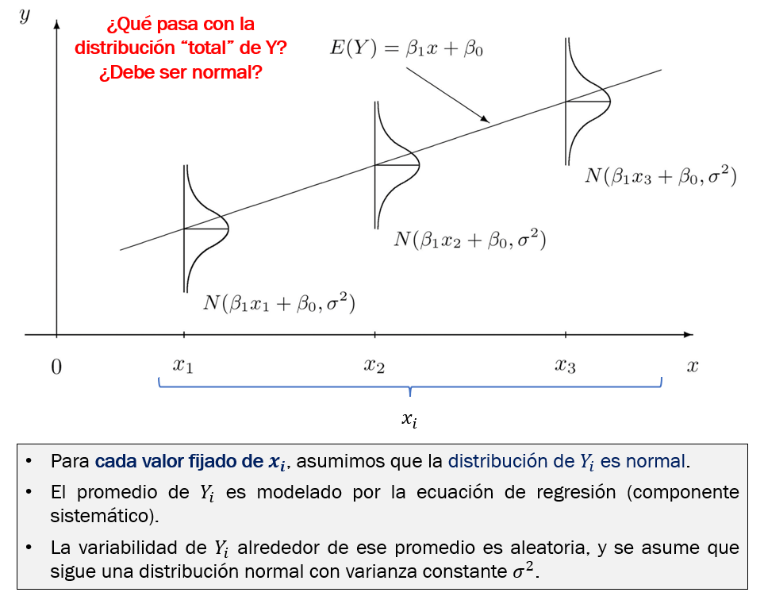Algunas notas sobre normalidad
No es necesario que \(\epsilon_i\) o \(y_i\) sigan una distribución normal para que los coeficientes de regresión \(\beta\) puedan estimarse de manera puntual.
Sin embargo, para estimar el
valor po losintervalos de confianzamedianteinferencia clásicasí se necesita asumir una distribución conocida. El modelo de regresión lineal normal asume normalidad de estos.- Asimismo, el modelo es robusto a desviaciones leves/moderadas de la normalidad cuando se cumple el TLC (número de observaciones grande).
Otros enfoques para inferencia flexibilizan este supuesto: p. ej., bootstrap, varianza robusta, modelo lineal generalizado que asume otras distribuciones, etc.
Estimación de ecuación de regresión
- En la práctica no conocemos los valores de los parámetros, así que los estimamos de nuestros datos.
¿Cómo estimamos la ecuación lineal que mejor ajusta a los datos observados?
Usamos métodos numéricos:
Método de Mínimos Cuadrados Ordinarios
Método de Máxima Verosimilitud
Ambos métodos son equivalentes para el caso de la regresión lineal normal.
Regresión Lineal Simple sobre variable explicativa categórica
Las variables categóricas no son continuas, en cambio son discretas y asumen unos cuantos valores.
¿Cómo estimar una medida de asociación cuando la variable explicativa es categórica?
Regresión Lineal Simple sobre variable explicativa categórica
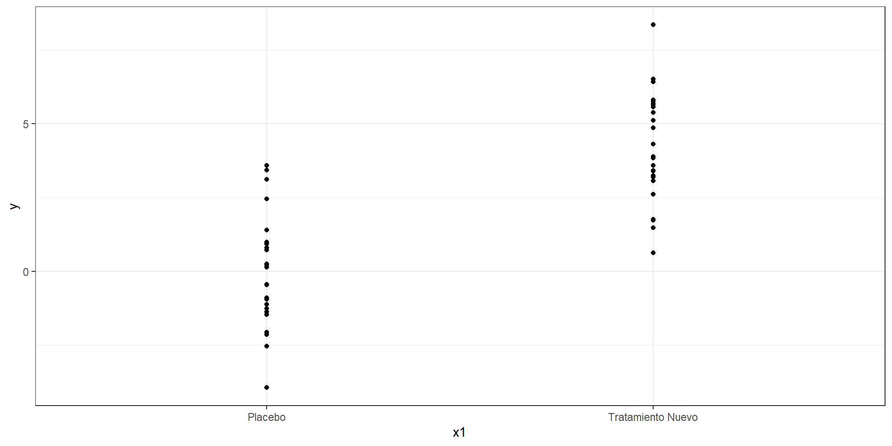Regresión Lineal Simple sobre variable explicativa categórica (cont.)
Si la variable es binaria, una forma de abordar el análisis es asignando a una categoría el valor de 1 y a otra el valor de 0.
Entonces, asumiremos que la variable categórica es numérica para los efectos de todo cálculo.
Sin embargo, la interpretación se centrará en la comparación de categorías.
Regresión Lineal Simple sobre variable explicativa categórica (cont.)
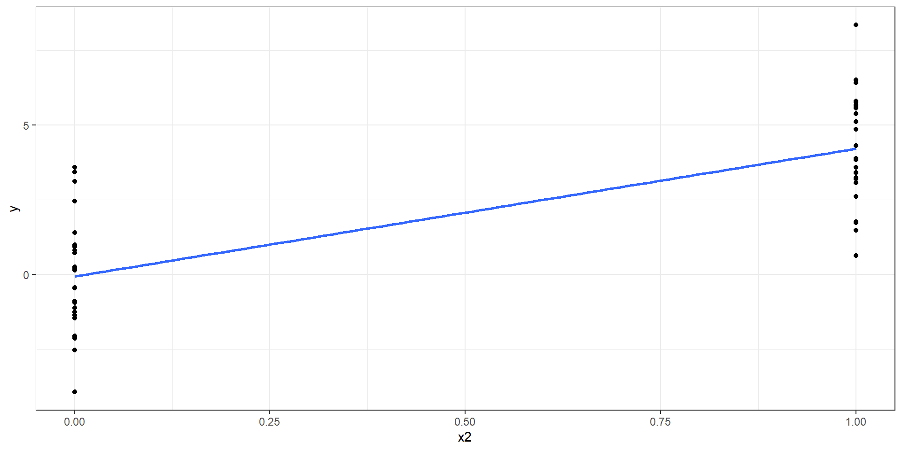Regresión Lineal Simple en R
- Se usa la función
lm()de R base. Sin embargo, la salida de esta no es muy informativa:
Call:
lm(formula = y ~ x1, data = datos)
Coefficients:
(Intercept) x1Tratamiento Nuevo
-0.06666 4.27094 - El modelo puede guardarse para realizar más operaciones sobre este. Por ejemplo, mejorar la salida:
Call:
lm(formula = y ~ x1, data = datos)
Residuals:
Min 1Q Median 3Q Max
-3.8666 -1.1168 -0.3487 1.3100 4.1336
Coefficients:
Estimate Std. Error t value Pr(>|t|)
(Intercept) -0.06666 0.37316 -0.179 0.859
x1Tratamiento Nuevo 4.27094 0.52773 8.093 1.59e-10 ***
---
Signif. codes: 0 '***' 0.001 '**' 0.01 '*' 0.05 '.' 0.1 ' ' 1
Residual standard error: 1.866 on 48 degrees of freedom
Multiple R-squared: 0.5771, Adjusted R-squared: 0.5683
F-statistic: 65.5 on 1 and 48 DF, p-value: 1.594e-10Interpretación de salida de RLS
- Usamos la función lm():
Call:
lm(formula = y_peso_final ~ x3_peso_inicial, data = datos2)
Residuals:
Min 1Q Median 3Q Max
-10.0568 -4.7717 -0.8704 5.1824 10.4953
Coefficients:
Estimate Std. Error t value Pr(>|t|)
(Intercept) -5.4317 2.6574 -2.044 0.0412 *
x3_peso_inicial 1.3447 0.1766 7.615 6.1e-14 ***
---
Signif. codes: 0 '***' 0.001 '**' 0.01 '*' 0.05 '.' 0.1 ' ' 1
Residual standard error: 5.535 on 998 degrees of freedom
Multiple R-squared: 0.05491, Adjusted R-squared: 0.05397
F-statistic: 57.99 on 1 and 998 DF, p-value: 6.1e-14- El modelo estimado sería el siguiente:
\[y\_pesofinal = -5.4317 + 1.3447*x3\_pesoinicial + \epsilon_i\]
\[\epsilon_i \sim Normal(0, 5.535^2)\]
- Usando el paquete
{broom}y su funcióntidy()podemos obtener también los intervalos de confianza:
# A tibble: 2 × 7
term estimate std.error statistic p.value conf.low conf.high
<chr> <dbl> <dbl> <dbl> <dbl> <dbl> <dbl>
1 (Intercept) -5.43 2.66 -2.04 4.12e- 2 -10.6 -0.217
2 x3_peso_inicial 1.34 0.177 7.62 6.10e-14 0.998 1.69 Interpretación:
\(\beta_0\) o
intercepto: Este viene a ser el valor promedio de \(y\) cuando todos los valores de \(x\) son 0. En este caso, cuando el peso inicial es cero kg. ¿Esto es posible?, por tal motivo, no se suele interpretar este valor.\(\beta_1\) o coeficiente de regresión de
x3_peso_inicial: Porcada 1 kg adicionalde peso inicial, elvalor promediodel peso final aumenta 1.43 kg (IC95% 1.00 a 1.69; p < 0.001).
- Usamos la función lm():
Call:
lm(formula = y_peso_final ~ x1_tto, data = datos2)
Residuals:
Min 1Q Median 3Q Max
-7.7043 -1.6644 -0.0095 1.5849 8.5658
Coefficients:
Estimate Std. Error t value Pr(>|t|)
(Intercept) 19.8771 0.1112 178.67 <2e-16 ***
x1_ttoTratamiento Nuevo -10.2325 0.1573 -65.04 <2e-16 ***
---
Signif. codes: 0 '***' 0.001 '**' 0.01 '*' 0.05 '.' 0.1 ' ' 1
Residual standard error: 2.488 on 998 degrees of freedom
Multiple R-squared: 0.8091, Adjusted R-squared: 0.8089
F-statistic: 4230 on 1 and 998 DF, p-value: < 2.2e-16- Usando tidy de broom:
# A tibble: 2 × 7
term estimate std.error statistic p.value conf.low conf.high
<chr> <dbl> <dbl> <dbl> <dbl> <dbl> <dbl>
1 (Intercept) 19.9 0.111 179. 0 19.7 20.1
2 x1_ttoTratamiento Nue… -10.2 0.157 -65.0 0 -10.5 -9.92Interpretación:
\(\beta_0\) (Intercept): A menudo no se interpreta. Es el valor promedio de \(y_i\) cuando los valores de \(x\) son cero. En este caso, cuando el tratamien es cero (placebo). ¿Esto es posible?, sí es posible pero no es de ayuda para modelos explicativos, por lo que no se interpreta.
\(\beta1\) x1Tratamiento Nuevo: El promedio de peso final en quienes recibieron el tratamiento nuevo fue 10.23 kg menor que el de quienes recibieron placebo (Dif. medias = -10.23; IC95% -10.54 a -9.92; p < 0.001).
Regresión Lineal Múltiple
Generaliza la RLS permitiendo evaluar la relación de varias covariables explicativas \(x\) sobre \(y_i\).
Para \(p\) variables explicativas, el modelo puede expresarse como:
Componente sistemático:
\[E[Y | X_1 = x_{1i}, ..., X_p = x_{pi}] = E[y_i] = \mu_i = \beta_0 + \beta_1x_{1i} + ... + \beta_px_{pi}\]
Componente aleatoria:
\[y_i \sim N(\beta_0 + \beta_1x_{1i} + ... + \beta_px_{pi}, \sigma^2)\]
\[\epsilon_i \sim N(0, \sigma^2) \]
Regresión Lineal en gráficos
- La ecuación de la RLS representa una línea recta.
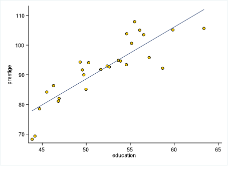
- La ecuación de la RLM con dos variables explicativas ya no representa una línea recta, sino un plano recto.
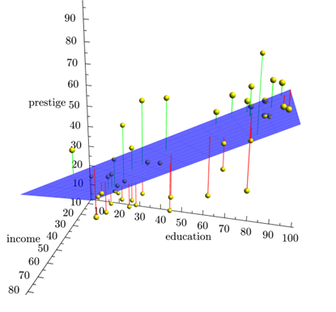
Genera un hiperplano recto.
No podemos imaginarnos una imagen de esto, pero sí podemos analizarlo a nivel estadístico.
RLM en R
- Usamos la función lm():
Call:
lm(formula = y_peso_final ~ x1_tto + x3_peso_inicial, data = datos2)
Residuals:
Min 1Q Median 3Q Max
-5.5598 -1.4213 0.1343 1.0768 5.4482
Coefficients:
Estimate Std. Error t value Pr(>|t|)
(Intercept) -0.94719 0.99689 -0.95 0.342
x1_ttoTratamiento Nuevo -10.25530 0.13111 -78.22 <2e-16 ***
x3_peso_inicial 1.38755 0.06614 20.98 <2e-16 ***
---
Signif. codes: 0 '***' 0.001 '**' 0.01 '*' 0.05 '.' 0.1 ' ' 1
Residual standard error: 2.073 on 997 degrees of freedom
Multiple R-squared: 0.8676, Adjusted R-squared: 0.8673
F-statistic: 3266 on 2 and 997 DF, p-value: < 2.2e-16- El modelo estimado sería el siguiente:
\[y\_pesofinal = -0.94719 -10.25530*x1ttoTratamientoNuevo + 1.3875*x3\_pesoinicial + \epsilon_i\]
\[\epsilon_i \sim Normal(0, 2.073^2)\]
- Usando el paquete
{broom}y su funcióntidy()podemos obtener también los intervalos de confianza:
# A tibble: 3 × 7
term estimate std.error statistic p.value conf.low conf.high
<chr> <dbl> <dbl> <dbl> <dbl> <dbl> <dbl>
1 (Intercept) -0.947 0.997 -0.950 3.42e- 1 -2.90 1.01
2 x1_ttoTratamiento Nu… -10.3 0.131 -78.2 0 -10.5 -10.0
3 x3_peso_inicial 1.39 0.0661 21.0 3.10e-81 1.26 1.52Interpretación:
\(\beta_0\) o
intercepto: Este viene a ser el valor promedio de \(y\) cuando todos los valores de \(x\) son 0. En este caso, cuando el peso inicial es cero kg y cuando el tratamiento es placebo. ¿Esto es posible?, por tal motivo, no se suele interpretar este valor.\(\beta_2\) o coeficiente de regresión de
x1_ttoTratamiento Nuevo: El promedio de peso final en quienes recibieron el tratamiento nuevo fue 10.26 kg menor que el de quienes recibieron placebo, luego de ajustar por peso inicial (Dif. medias = -10.26; IC95% -10.51 a -9.99; p < 0.001).\(\beta_1\) o coeficiente de regresión de
x3_peso_inicial: Porcada 1 kg adicionalde peso inicial, elvalor promediodel peso final aumenta 1.39 kg, luego de ajustar por tatamiento recibido (IC95% 1.26 a 1.52; p < 0.001).
:::
Errores y residuos
Los
errores(\(\epsilon_i\)) son medidas de la población a la que no tenemos acceso.- Sin embargo, varios supuestos de la regresión involucran a los errores inaccesibles por el investigador.
Los
residuos(\(e_i\)) son el análogo a loserrorespero obtenidos de lamuestra observada.Podemos usar los
residuosparaevaluaralgunossupuestossobre loserrores.
Residuos gráficamente
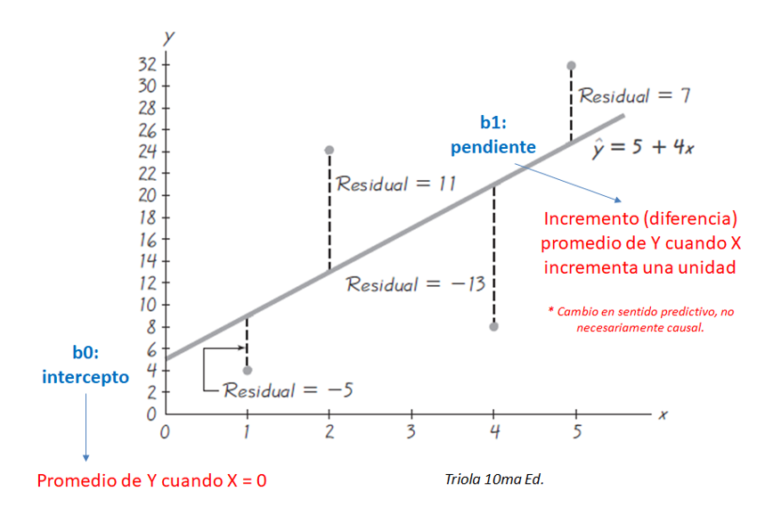Supuestos de la regresión lineal normal
Linealidad
Independencia de observaciones
Homocedasticidad de los errores \(\epsilon_i\)
Normalidad de los errores \(\epsilon_i\) o de \(y_i\).
No problemas con la regresión:
- Puntos influyentes.
- (Multi) colinealidad: Solo cuando es un problema, no siempre lo es.
Algunas notas sobre los errores y residuos
En realidad, los supuestos de los modelos lineales son sobre el comportamiento probabilístico de \(y_i\).
Sin embargo, la idea de la existencia de los
erroresy de sus valores observados en la muestra,residuosresulta útil para evaluar supuestos.Permiten reducir un problema de muchas dimensiones a solo 1 o 2 dimensiones.
Son como las placas radiográficas para el diagnóstico de los modelos.
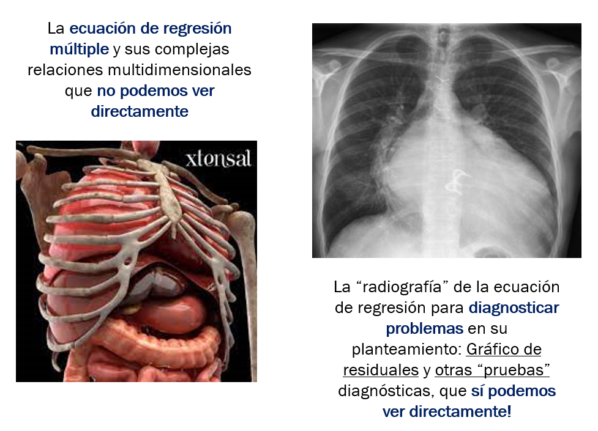
¿Cómo evaluar los supuestos de la regresión lineal?
Se usan los residuos para explorar el comportamiento de los \(y_i\) o los errores \(\epsilon\).
Preferiblemente usar gráficos de residuos.
Pruebas de hipótesis que usan residuos tienen los mismos problemas que discutimos en clases anteriores.
Podríamos usarlas para complementar análisis cuando los tamaños de muestra no son ni muy pequeños ni muy grandes.
La función
check_modeldel paquete{performance}genera un panel de gráficos muy útil para evalur estos supuestos.Podemos complentar el análisis de supuestos con funciones del paquete
{car}.
- Podemos usar gráficos de residuos parciales + Componente:
- También podemos usar gráficos de variable agregada
Se puede evaluar si la homocedasticidad es consistente según cada variable predictora.
Si no lo es, se puede optar por modelar esta heterogeneidad de varianzas.
Se sugiere usar
residuos estudentizados.
Tablas de regresión lineal reproducible
Podemos usar la librería {gtsummary} para esto.
Veamos un ejemplo.

Programa de Formación Científica: Análisis Estadístico 2022 - Sesión 4